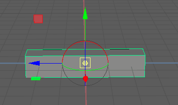

枢轴点定义对象或组件绕其旋转和缩放的位置。默认情况下，一个对象或一组对象/组件的枢轴点位于其中心。如果要将对象围绕特定点旋转（例如前臂围绕肘部旋转），您需要调整枢轴的位置。提供了两种方法：
使用“高度基线”(Height Baseline)重新定位枢轴

默认情况下，每个多边形几何体对象的枢轴设置为几何体中心 (0)。“高度基线”(Height Baseline)属性可用于将其重新定位到对象的顶部 (-1) 或底部 (0)。
调整“高度基准线”(Height Baseline)将移动枢轴
若要修改枢轴的位置，请执行下列操作之一：
-
- 在属性编辑器(Attribute Editor)的几何体选项卡（例如 polyCube1）中，更改“高度基线”(Height Baseline)设置。
- 在节点编辑器(Node Editor)中，单击几何体节点（例如 polyCube1）的输出端口，然后选择“高度基线”(Height Baseline)。

使用“自定义枢轴”(Custom Pivot)模式重新定位枢轴
“自定义枢轴”(Custom Pivot)模式是另一种可用于设置对象和组件枢轴点的方法。

| 变换 | 与枢轴的关系 |
|---|---|
|
移动 |
移动枢轴点（并且对象也随其一起移动）。 |
|
缩放 |
远离或接近枢轴点缩放对象 |
|
旋转(Rotation) |
围绕枢轴点旋转对象。  |
|
提示： 您可以通过按键盘上的 + 或 - 来更改枢轴尺寸。
|
|
更改枢轴点
- 选择要变换的对象或组件。
- 选择变换工具(transform tool)。
- 通过执行以下操作之一进入“自定义枢轴”(Custom Pivot)模式：
- 按 D 键（或按住该键）或 Insert 键。
- 单击“工具设置”(Tool Settings)中的“编辑枢轴”(Edit Pivot)。
将显示自定义枢轴操纵器（组合了平移和旋转操纵器）。如果您正在组件模式下建模，多组件选择模式将激活。
- 拖动或捕捉(snap)自定义枢轴操纵器以移动或旋转枢轴。
您还可以使用以下工作流：
- 单击组件以将枢轴捕捉和对齐到选定组件。

- 按住 Ctrl 键并单击组件，将其轴方向捕捉到选定组件。

- 按住 Shift 键并单击，将枢轴放置在光标处。如果按住 Shift 键并单击组件，则枢轴将捕捉到该组件。
 提示： 与标准建模一样，通过在“枢轴操纵器”(Pivot Manipulator)中单击相应的轴控制柄，可以将移动约束到特定方向。
提示： 与标准建模一样，通过在“枢轴操纵器”(Pivot Manipulator)中单击相应的轴控制柄，可以将移动约束到特定方向。 - 同时按住 Ctrl 和 Shift 键并在对象中单击，将枢轴对准鼠标光标。如果同时按住 Ctrl 和 Shift 键并单击特定枢轴，将发生以下情况：
- 如果选择了中心控制柄或 X 轴控制柄，则自定义枢轴在选定组件上确定其 X 轴。
- 如果选择了 Y 轴控制柄，则自定义枢轴在选定组件上确定其 Y 轴。
- 如果选择了 Z 轴控制柄，则自定义枢轴在选定组件上确定其 Z 轴。
按住 C 或 V 键并使用鼠标中键拖动另一个对象，以将枢轴分别捕捉到该对象的边或顶点。如果要快速将一个对象中的组件对齐到另一个对象，这很有用。

- 单击组件以将枢轴捕捉和对齐到选定组件。
- 通过重复步骤 4 退出“自定义枢轴”(Custom Pivot)模式。
注： 在“自定义枢轴”(Custom Pivot)模式下切换工具或单击不同的对象时，自定义枢轴将会保留。
通过在场景上单击鼠标右键并选择任一“重置枢轴”(Reset Pivot)选项，您可以随时重置已修改的枢轴的位置/方向（仅在“自定义枢轴”(Custom Pivot)模式下）。
注： 也可以通过“修改 > 烘焙枢轴”(Modify > Bake Pivot)将自定义枢轴烘焙到各自的对象。
除了使用“自定义枢轴”(Custom Pivot)模式之外，您还可以通过在属性编辑器中输入精确值来定位对象的枢轴。
使用精确值重新定位对象的枢轴
- 打开“属性编辑器”(Attribute Editor)并单击变换节点的选项卡。
- 在“枢轴”(Pivots)部分启用枢轴显示选项，这样就可以看到编辑枢轴值所产生的效果。
- 执行下列操作之一：
- 在“局部空间”(Local Space)部分，相对于对象的原点为“旋转枢轴”(Rotate Pivot)和“缩放枢轴”(Scale Pivot)键入 X、Y 和 Z 坐标。
- 在“世界空间”(World Space)部分，相对于世界原点为“旋转枢轴”(Rotate Pivot)和“缩放枢轴”(Scale Pivot)键入 X、Y 和 Z 坐标。